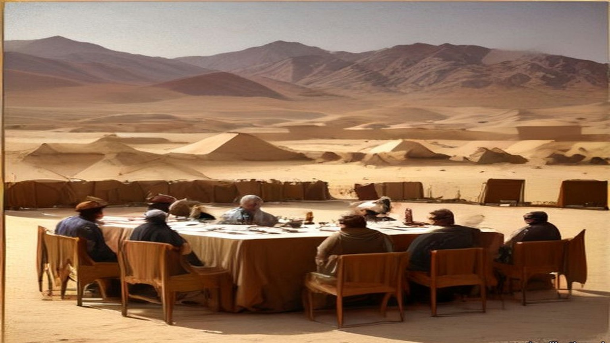
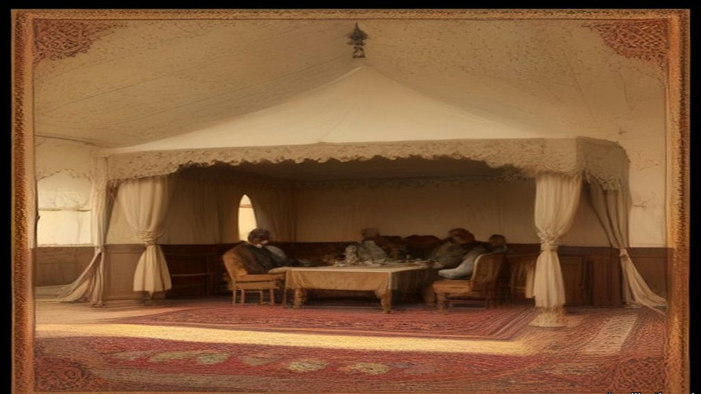
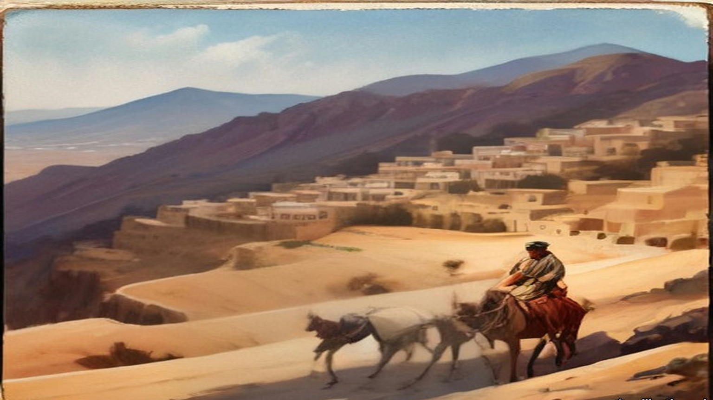
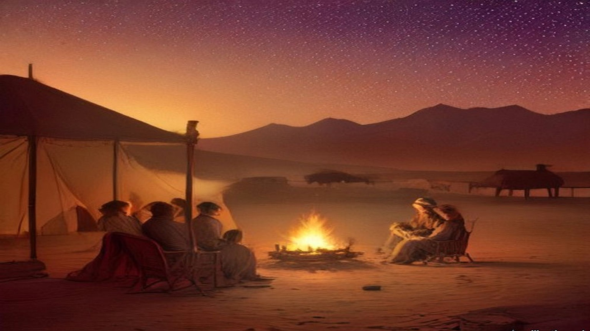
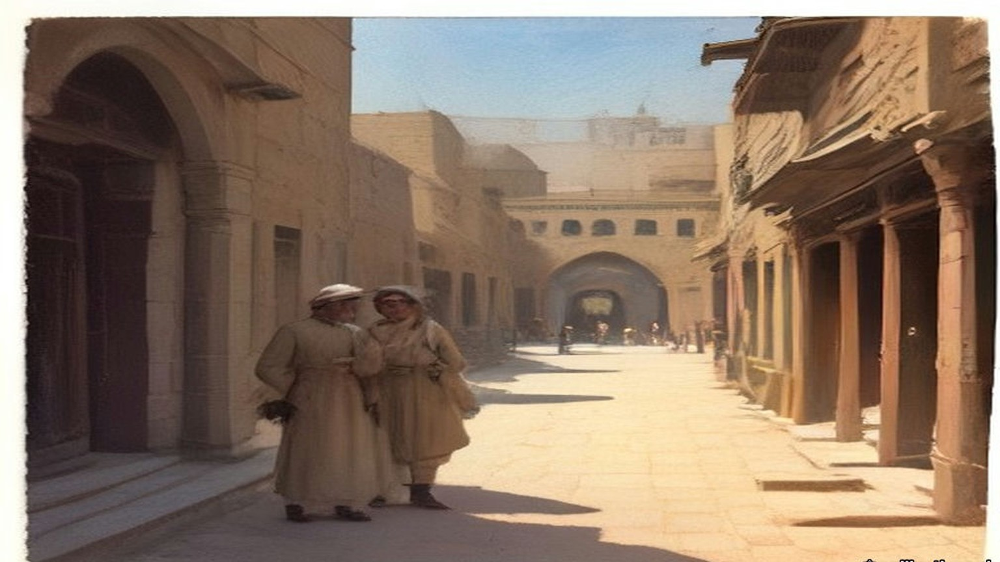
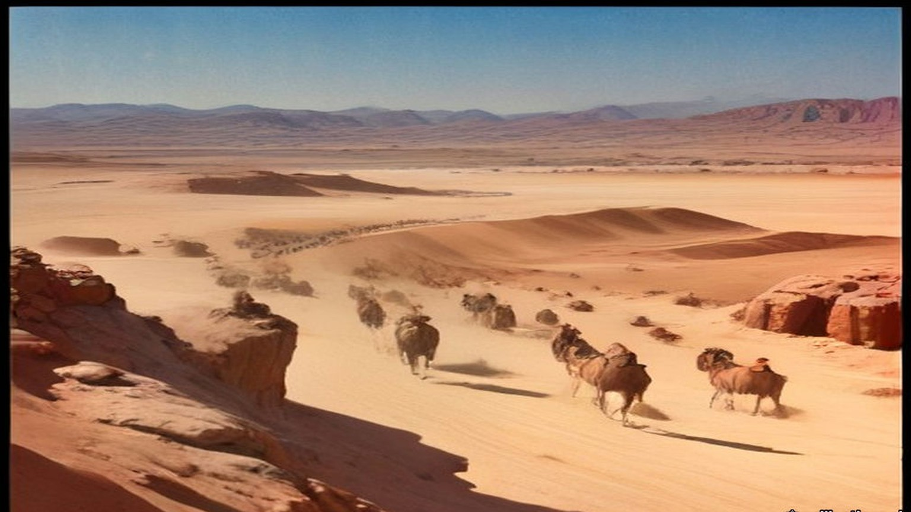
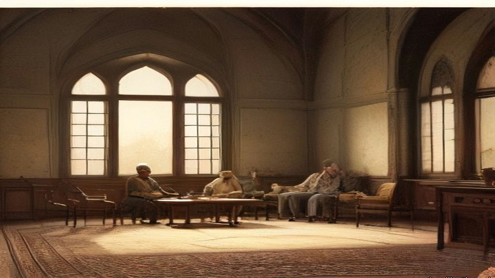

Chapter 24
Fifty Thousand Pounds in Gold for Mecca, 1915–1917
Cairo, Mecca, the Hejaz coast, London, Rome and Westminster, April 1914 to December 1917
Abdin Palace and the British Agency, Cairo, April 1914 to July 1915
The Amir Abdallah, second son of the Grand Sharif of Mecca, came through Cairo from Constantinople in April 1914 as the guest of the Khedive. Lord Kitchener received him. Abdallah appeared to have something to say and did not reach the point of saying it. Then word came from Constantinople that such audiences displeased the Sublime Porte, and Kitchener received him no more. Before long Abdallah asked Ronald Storrs, the Oriental Secretary at the British Agency, to call.
Storrs sat two hours with him in the Abdin Palace. Abdallah intoned for him whole episodes of the Seven Suspended Odes of the poets before Islam, and the Glories and the Lament of Antar ibn Shaddad, and between them they drank, Storrs reckoned, whole quarts of the rich Khedivial coffee. By a series of delicately inclined planes the talk came down from the warrior past to the defenceless Arab present. Would Great Britain present the Grand Sharif with a dozen machine guns, or even half a dozen? Storrs asked what their purpose could be. For defence, Abdallah said. Pressed, he said the defence would be against attack from the Turks.
Storrs needed no instructions for that answer. Britain could never entertain the idea of supplying arms to be used against a friendly Power. They parted on the best of terms. On 26 April Kitchener wrote privately to Sir William Tyrrell in London that Storrs, under his instructions, had told Abdallah that "the Arabs of the Hejaz could expect no encouragement from us and that our only interest in Arabia was the safety and comfort of Indian pilgrims." The Sharif's son, Kitchener added, had been disappointed by the Turkish determination to push the railway on to Mecca, "which he saw would mean the economic death of the camel-owning population of Arabia."
In October Turkey was going to war. Storrs prepared a letter for Abdallah and a suitable gift, and chose as secret messenger the father-in-law of his little Persian agent, Ruhi. The man went down the Red Sea from Suez on 5 October and was in Jeddah in three days. The customs search there was perfunctory. For one or at most two piastres, he reported, quite large packages could be brought in. He hired a donkey for two pounds, rode all night and reached Mecca at nine the next morning, and paid eight pounds for a room by the Bab al-Salam during his pilgrimage. Every man he met was armed to the teeth, cabman, donkey-boy or mule-driver.
When the Grand Sharif Husain came back to Mecca from Taif, the messenger kissed the hem of his garment with the first of the visitors. Later a servant took him to a room at the very top of the palace, and there the Sharif was sitting alone. "My son," the Sharif said, "though I am as one uninvited in this matter I will yet speak." He walked up and down the room as he spoke and made the messenger stay seated. "The Ottoman Empire has rights over us and we have rights upon her. She has made war upon our rights, and I am not responsible before God if she has made war upon our rights; nor am I responsible before God if we have therefore made war upon hers." He threw back the long sleeve of his robe. "My heart is open to S. even as this," he said, and, with a gesture: "Stretch forth to us a helping hand and we shall never at all help these oppressors."

The messenger came back to Cairo and told it all, and Storrs turned it into English for a stenographer as he spoke. On 31 October Kitchener cabled his salaams to Abdallah. "If Arab nation assist England in this war England will guarantee that no intervention takes place in Arabia and will give Arabs every assistance against external foreign aggression."
The first definite proposals reached the High Commissioner, Sir Henry McMahon, in July 1915, enclosed in a personal letter to Storrs, unsigned. Storrs sat with it at his desk. The hand was difficult and the Arabic more difficult still, and as he worked down the page he found himself murmuring an old rhyme:
In matters of commerce the fault of the Dutch
Is offering too little and asking too much.
The Arab nation asked England to acknowledge "the independence of the Arab countries, bounded on the north by Mersina and Adana up to the 37° of latitude, on which degree fall Birijik, Urfa, Mardin, Midiat, Jezirat (Ibn 'Umar), Amadia, up to the border of Persia; on the east by the borders of Persia up to the Gulf of Basra; on the south by the Indian Ocean, with the exception of the position of Aden to remain as it is; on the west by the Red Sea, the Mediterranean Sea up to Mersina." England was "to approve of the proclamation of an Arab Khalifate of Islam." In return the Sharif's Arab Government would give England preference in all economic enterprises in the Arab countries, other things being equal. England was to acknowledge the abolition of foreign privileges. The Arab nation begged for an answer, yes or no, "in a period of thirty days," after which "they reserve to themselves complete freedom of action."
"With the exception of Aden," Storrs wrote later, the Sharif "demanded the whole of Arabic-speaking South-West Asia." He thought then, and he thought twenty years afterwards, "that the Sharif opened his mouth and the British Government their purse a good deal too wide."
* * *
The Residency, Cairo, 30 August to 24 October 1915
McMahon's first answer went on 30 August. It confirmed the terms of Kitchener's message, with its "approval of the Arab Khalifate when it should be proclaimed." On "limits and boundaries" it said that "it would appear to be premature to consume our time in discussing such details in the heat of war," while the Turk was still in effective occupation of much of the ground. It offered something closer to hand: "we are ready to send your Highness for the Holy Cities and the noble Arabs the charitable offerings of Egypt so soon as your Highness shall inform us how and where they should be delivered."
The Sharif's reply was dated 29 Shawwal 1333, 9 September. He had received McMahon's letter "with great cheerfulness and delight," he wrote, "in spite of the impression I received from it of ambiguity and its tone of coldness and hesitation with regard to our essential point." The limits were not his. "I am confident that your Excellency will not doubt that it is not I personally who am demanding of these limits which include only our race, but that they are all proposals of the people." Within them, he wrote, they had not included places inhabited by a foreign race.
Then he turned to the grain and the money. The grain for the people of the Hejaz, and the moneys called surras known to the Ministry of Wakfs, came from pious endowments, "and has nothing to do with politics." Let the grain of the two years go to Jedda "in a special steamer," officially, in the name of the people as usual. The captain or the official sent with it was to accept no receipt but one signed by the grain official of Jedda himself. If he found anything contrary to that arrangement, he was to say he would sail home with the cargo.
McMahon's letters went to Mecca in Arabic. "Our Arabic correspondence with Mecca," Storrs wrote, "was prepared by Ruhi, a fair though not a profound Arabist (and a better agent than scholar); and checked, often under high pressure, by myself." Storrs had no deputy, no staff and no office of his own. The Sharif's letters came back "in an obscure and tortuous prose in which the purity of the Hejaz Arabic was overlaid and tainted with Turkish idioms and syntax." Every sentence passed through Ruhi's pen and Storrs's eye in Cairo before it reached Mecca, and through a translator before it reached London.
The English draft that went to Ruhi in October answered the complaint first. McMahon regretted the impression of coldness and hesitation. "Such was not the case," but it had appeared to him "that the moment had not yet arrived when they could be most profitably discussed." Then it came to the boundaries:
"The districts of Mersina and Alexandretta and the portions of Syria lying to the west of the districts of Damascus, Homs, Hama and Aleppo cannot be said to be purely Arab, and should be excluded from the proposed limits and boundaries. With the above modification, and without prejudice to our existing treaties with Arab chiefs, we accept these limits and boundaries, and, in regard to those portions of the territories therein in which Great Britain is free to act without detriment to the interests of her ally, France, I am empowered, in the name of the Government of Great Britain, to give you the following assurances and make the following reply to your letter."
Great Britain was prepared to recognise and support the independence of the Arabs within the limits the Sharif proposed, subject to the modification. It would guarantee the Holy Places against all external aggression. When the situation admitted, it would help the Arabs to establish suitable forms of government. The Arabs would seek the advice and guidance of Great Britain only, and such European advisers and officials as they needed would be British. In the vilayets of Baghdad and Basra, the Arabs would recognise that "the established position and interests of Great Britain" required "special measures of administrative control in order to secure these territories from foreign aggression, to promote the welfare of the local populations and to safeguard our mutual economic interests."

McMahon signed it on 24 October 1915. At the end he wrote of his relief at the safe arrival of the Holy Carpet "and the accompanying offerings," landed without mishap in spite of the war. He sent the letter "by the hand of your trusted and excellent messenger, Sheikh Mohammed Ibn Arif Ibn Uraifan."
Twenty-four years later, in 1939, the Foreign Office printed the exchange as a Command Paper, Cmd. 5957. Its explanatory note said the correspondence had been "exchanged in Arabic," and that the English of some drafts had been modified "where the language has been criticised on the ground that it does not reproduce accurately the Arabic of the actual correspondence and the criticism has been found on examination to be justified." The revised sentence ran: "The two districts of Mersina and Alexandretta and portions of Syria lying to the west of the districts of Damascus, Homs, Hama and Aleppo cannot be said to be purely Arab, and should be excluded from the limits demanded." "Special measures of administrative control" became "special administrative arrangements." "Her traditional friends the Arabs" became "her friends the Arabs." The words of 1915 went into the footnotes, each one marked "Former reading."
* * *
Mecca, Dhu al-Hijja 1333 to Rabiʿ al-Akhir 1334
Of the letters I speak, because the writing of them, it was my work.
Sits our master the Sharif by the window, and I below him with the board on my knee, and he speaks and I write. And when he has finished he speaks it again in another way, and I write that also. Long, the speech of our master, ya akhī. And in it the Turkish, the Turkish of the Dawla, its turns and its words, and the Arabic of al-Ḥijāz underneath like water under oil. Thumma he says to me, read, and I read, and he takes back a word and gives another word in its place.
Came the letter of al-Inglīz, الإنكليز, in the month of Dhu al-Hijja, from the big man of Maṣr. And our master said, write. "We renounce our insistence on the inclusion of the vilayets of Mersina and Adana in the Arab Kingdom." Then he stopped, and I waited with the pen over the paper, and he said: "But the two vilayets of Aleppo and Beirut and their sea coasts are purely Arab vilayets, and there is no difference between a Moslem and a Christian Arab: they are both descendants of one forefather."
And of ʿUmar ibn al-Khaṭṭāb, raḍiya Allāhu ʿanhu, he spoke, who said of the Christians, "They will have the same privileges and submit to the same duties as ourselves." And of al-ʿIrāq he spoke, the seat of the Khalifate in the time of ʿAlī ibn Abī Ṭālib, karrama Allāhu wajhahu. That the English keep it "for a short time," those districts which their soldiers hold, "against a suitable sum paid as compensation to the Arab Kingdom for the period of occupation, in order to meet the expenses which every new kingdom is bound to support." A sum, wallāhi. Every new kingdom has its expenses. I wrote it and I put the sand on it.
And at the end a thing I remember for the sound of it more than for its sense. "Had it not been for the determination which I see in the Arabs for the attainment of their objects, I would have preferred to seclude myself on one of the heights of a mountain." I wrote it, and I did not lift my head.
Came their answer in Safar. Fully understood, they wrote, Aleppo and Beirut, and taken careful note; but France, their ally, is in them both, and the question will require careful consideration. And at the bottom: "As an earnest of our intentions, and in order to aid you in your efforts in our joint cause, I am sending you by your trustworthy messenger a sum of twenty thousand pounds."
Twenty thousand, ya rabb. I have seen gold. In the season of the Ḥajj I have seen it in the hand of the ṣarrāf in the sūq, a little gold, so. Not this. Heavy, the gold, so that one man alone could not lift the whole of it, al-junayh al-inglīzī, الجنيه الإنكليزي, every coin with the head of their king. Our master looked at it. He said nothing to me of it, and I said nothing.
Then our master wrote to them again, the twenty-fifth of Safar. That their letter "removed that which had made me uneasy." That the amount for al-ʿIrāq he leaves "to the perception of her wisdom and justice." And of the north, of France, he said, write: "at the first opportunity after this war is finished, we shall ask you (what we avert our eyes from to-day) for what we now leave to France in Beirut and its coasts." And after: "it is impossible to allow any derogation that gives France, or any other Power, a span of land in those regions." A span, شبر, shibr, the breadth of a man's hand spread open. And he wrote that they stood firm on "our resolution which Storrs learnt from us two years ago."
In Rabīʿ al-Ākhir he gave me the list. One of his sons had gone to al-Shām. Guards had been raised from the people of al-Ḥijāz, from them only. And now, write. First, "The amount of £50,000 in gold for the monthly pay of the troops levied, and other things the necessity of which needs no explanation. We beg you to send it with all possible haste." Secondly, of rice twenty thousand sacks, and of flour fifteen thousand, and of barley eight thousand, and of coffee a hundred and fifty, and of sugar a hundred and fifty, and five thousand rifles "of the modern pattern," with their ammunition, and cartridges of the Martini-Henry and of the rifles of the factory of St. Étienne in France, for the two kinds of rifles our tribes carry. The place of all of it, Port Sudan.
Then the man who would come for the money. Him, they should not put on a steamer, nor treat in any way out of the ordinary. He would carry a letter to "Al Khawaga Elias Effendi, saying that he (Elias) will pay him, in accordance with the letter, the rent of our properties." The rent of our properties. I wrote it, and our master looked at the line a long time, and then he said, good.
And the eighth thing on that paper. "Let the British Government consider this military expenditure in accordance with the books which will be furnished it, explaining how the money has been spent." The fourteenth of Rabīʿ al-Ākhir, 1334. I folded it.

* * *
The Residency, Cairo, and the Foreign Office, London, March to May 1916
McMahon answered on 10 March 1916. The Sharif's requests had been approved, and "that which you asked to be sent with all haste is being despatched with your messenger, who is also the bearer of this letter." The rest would be collected and held at Port Sudan until the Sharif sent word officially that the movement had begun. The Governor at Port Sudan had his instructions. In his letter of 25 January McMahon had told the Sharif that the friendship of Great Britain and France, once the war was won, would be "yet more firm and enduring, cemented by the blood of Englishmen and Frenchmen who have died side by side."
Eight weeks after the March letter, on 16 May 1916, Sir Edward Grey wrote from the Foreign Office to the French Ambassador, Paul Cambon. He acknowledged Cambon's note of the 9th, which accepted "the limits of a future Arab State, or Confederation of States, and of those parts of Syria where French interests predominate," as they resulted "from recent discussions in London and Petrograd." The British negotiator in those discussions was Sir Mark Sykes, the French one Georges Picot. Grey wrote that acceptance of the whole project "will involve the abdication of considerable British interests," but that the Government were ready to accept the arrangement, "provided that the co-operation of the Arabs is secured, and that the Arabs fulfil the conditions and obtain the towns of Homs, Hama, Damascus, and Aleppo."
The note ran to twelve articles and a coloured map. France and Britain would "recognize and protect an independent Arab State or a Confederation of Arab States in the areas (A) and (B) marked on the annexed map, under the suzerainty of an Arab chief." In area (A) France, and in area (B) Britain, would have "priority of right of enterprise and local loans," and would alone supply advisers. In the blue area France, and in the red area Britain, could establish "such direct or indirect administration or control as they desire." In the brown area there would be an international administration, its form to be decided after consultation with Russia, the other Allies, "and the representatives of the Shereef of Mecca."
Britain was to have the ports of Haifa and Acre, and the right "to build, administer, and be sole owner of a railway connecting Haifa with area (B)," with "a perpetual right to transport troops along such a line at all times." Haifa would be a free port for French trade. Alexandretta would be a free port for British trade. Britain would never negotiate the cession of Cyprus to a third Power without French consent. For twenty years the existing Turkish customs tariff would stay in force in every area. The eleventh article said that the negotiations with the Arabs as to boundaries "shall be continued through the same channel as heretofore on behalf of the two Powers."
The channel ran through Storrs's desk. "Until Mark Sykes appeared in Cairo in 1916," he wrote, "we had but the slightest and vaguest information about the Sykes-Picot negotiations for the tripartite division of non-Turkish Turkey between France, Russia and England."
* * *
Samima, near Jeddah, 6 June 1916
On 23 May a telegram reached McMahon from Port Sudan. The Sharif's son Abdallah wanted Storrs on the Arabian coast urgently. Storrs left Cairo at a quarter past six in the evening of 28 May with David Hogarth and Captain Kinahan Cornwallis, and with £10,000 in gold, which two N.C.O.s guarded as far as Suez. From there they went down the Red Sea in the Dufferin. At about nine on the morning of 2 June a wireless came: "Foreign Office has approved payment of £10,000 to Abdallah and £50,000 to Sharif of Mecca. But this latter payment only in return for definite action and if a reliable rising takes place."
Off Jeddah on the 5th the Sharif's agent Oraifan came aboard with a letter for Storrs signed in full, "Husain, Amir of Noble Mecca," and in Abdallah's handwriting except for the signature. Abdallah could not come. He was leaving for Taif to besiege the Turkish governor there, because the rising had been moved forward to Saturday, 10 June. His young brother Zaid would come in his place, with their cousin Sharif Shakir.
At half past five the next morning Storrs left the Dufferin two miles out, in the gig, with the cutter in tow behind a steam launch. Hogarth and Cornwallis were with him, and Oraifan and Ruhi, the £10,000, and two sacks of al-Haqiqa, the Arab Bureau's propaganda newspaper. The cutter hit the outer reef hard and broke her rudder. A canoe led them through to a dhow half full of sacks of maize. They tied up to it and sat for over an hour while the sailors hauled a sail across for an awning and spread their shawls over the sacks.
At length ten camels came over the skyline and down to the shore. Oraifan paddled back to say that Zaid wished to see Storrs alone. Storrs went in the cutter to within eighty yards of the beach and then stepped into Oraifan's canoe, which had so much water in it that he stood up the whole way. Two slaves carried him the last ten yards and soaked him well above the knee. Without looking up, he saw Zaid and Shakir coming slowly towards him. He went on arranging his clothes. He meant them to come down past their guard to meet him on the sand, since he was, after all, there for the High Commissioner. They came, and shook him warmly by the hand.

In the tent there were two small divans, each with two new, poor Shirwan rugs, and kilims underfoot. Zaid was about twenty, fair, with fine eyes and a round face, and was trying to grow a backward beard. Shakir was two inches taller and some ten years older, his face badly pitted by smallpox, his hair plaited in seven or eight long thin tails. Both wore kaftans of rich Egyptian silk. Zaid had a black cloak and an embroidered yellow kuffiya, Shakir a brown camel-hair cloak and a small check kuffiya, and both wore Mecca sandals and large, bright gold aqals. They were so faultless that Storrs was sure they had stopped and changed just before they arrived.
Storrs glanced at his gold bracelet watch to see how the time stood, and when he looked up Zaid was gazing at it. He had brought Zaid no present. The cash was for his brother. He drew the watch off, showed him how to wind it, set it to Arab time by a swift calculation, and fastened it on Zaid's wrist.
Zaid handed him papers. Running his eye down the list of requests in the first, Storrs saw £50,000 with £20,000 more, £70,000 in all. He explained that the first sum would come as soon as there was certain news the rising had begun. "I am then happy to be able to announce to you," Zaid said, "that it began yesterday at Medina." Storrs asked what results he had heard of. By "begun," Zaid explained, he had meant "was timed to begin." Storrs put a question to him. If he were helping a partner with money in a common cause, would he not want some practical result before he went on with it indefinitely? Zaid agreed that he would, and his father more. Was he not aware, Storrs went on, that Britain was already advancing some millions a day to those who had proved themselves its friends?
The Turks had 80,000 men with guns in Syria, Zaid said. Would they not come down on the Hejaz and take a terrible vengeance? Storrs disputed the number. Munitions, money and supplies would follow once the revolt had begun, he said, but these things were not to be plucked like dates from palm trees. Zaid told him the new flag of Arab independence would be crimson, without device, as a slave in white and silver brought coffee in large cups.
On board the Dufferin Cornwallis gave Zaid the British figure for the Turks in Syria, 30,000. Zaid refused it outright. The two sharifs were shown the wireless, which fascinated them, the guns, and the captain's bathroom. A gazelle walked about the deck eating cigarettes off the mess table. At half past twelve the steam launch took them back to their dhow, carrying, rather to the alarm of the Englishmen, the £10,000 and the two bundles of al-Haqiqa. Storrs sent a thousand cigarettes after them for Faisal and Ali at Medina, the only smokers in the family.
When they had gone, Oraifan repeated to Storrs something Shakir had said. "Do the English not see that if the Sharif is not able to redeem his money promises to the Arabs, he will be a liar and lose his honour before them? Then where will be success?"
* * *
Jeddah, 13 to 17 October 1916
The rising began on the 10th. From 8 August 1916, Storrs recorded, Husain received £125,000 a month. In October Lawrence wrote that "the coast towns are glutted with Gold and the Rupee is only 10-12 to the sovereign."
Storrs went down again that month with Lawrence in the Lama, a converted steamer of two thousand tons. Two young veterinary officers were aboard, going to Jeddah to buy £10,000 worth of camels as a first consignment, and Lawrence shared a cabin with one of them. Storrs found the ship loaded with coal and ammunition more than two feet above her safety line, which in peacetime would have meant a fine of some £500. Two boiler tubes burst on the way.
In Jeddah Storrs walked the town with his Kodak and took notes. "Money current Turkish, Egyptian and Indian silver. English gold. Loss on exchange, except of Indian money." Shops were small and kept by Meccans, Indians, Yemenis or Javanese. Twenty thousand people had made the pilgrimage, more than the Sharif had expected. Ruhi, to keep up his name for piety, had drunk so much holy Zamzam water that he had been locked in misery ever since.
On the 17th, at about twelve, the Sharif began ringing them up at the Consulate and went on without a pause until half past one. He repeated himself to Storrs ten or eleven times, asking for a brigade and for aeroplanes, until Storrs reminded him that they did not, unfortunately, have the British Army drawn up in the Consulate back garden.
Abdallah came at six. Storrs took him up to the top north balcony, over the city wall and the desert. The situation at Rabigh, Abdallah began, dwarfed every other question. He was deeply disappointed that Storrs had not brought the £10,000 he had asked for by telegram. Storrs told him without any softening that the subsidy to his father was meant to cover the operations of the sons as well. His father was doing all he could, Abdallah said, and he himself had spent a large sum from his private fortune on the reduction of Taif. He needed every piastre they could send.

Then he moved to the title. Majesty, Jalala, and King, Malik, of the Arab Nation. It seemed hard that Montenegro should take that style and the Sharif of Mecca not. Storrs reminded him that when Nicholas proclaimed himself king he at least held the whole of his Black Mountain. With these alarms at Rabigh and Medina, could the Sharif say as much? Abdallah seemed to agree. He promised Storrs an advance copy of the first Hejaz Budget.
Storrs gave the total twenty years later. The Revolt in the Desert had cost the British taxpayer £11,000,000. The gold sent to Husain, the sums Storrs had carried and the £125,000 a month, came to "less than one million sterling. The remaining ten millions represent military operations and supplies from Great Britain."
* * *
Foreign Office, London, 2 November 1917
The letter was headed "Foreign Office, November 2nd, 1917," and began "Dear Lord Rothschild." The Foreign Secretary, Arthur James Balfour, had "much pleasure in conveying to you, on behalf of His Majesty's Government, the following declaration of sympathy with Jewish Zionist aspirations which has been submitted to, and approved by, the Cabinet."
"His Majesty's Government view with favour the establishment in Palestine of a national home for the Jewish people, and will use their best endeavours to facilitate the achievement of this object, it being clearly understood that nothing shall be done which may prejudice the civil and religious rights of existing non-Jewish communities in Palestine, or the rights and political status enjoyed by Jews in any other country."
The declaration inside the quotation marks ran to sixty-seven words. Balfour asked Lord Rothschild to bring it "to the knowledge of the Zionist Federation," and signed himself "Yours sincerely, Arthur James Balfour."
* * *
London to Taranto, 7 to 13 November 1917
Five days later Storrs left Charing Cross at twenty past one, seen off by his father and his brother Francis. He was going back to Cairo, and from there it was proposed he should go into Arabia to reconcile the Sharif and Ibn Saud. He was doubtful of it at heart, knowing what he called Husain's "genius for the scientific organization of delay." Sykes had arranged for him to join Georges Picot in Rome and travel on with him under French auspices, and at the Foreign Office Harold Nicolson "immediately provided me with the necessary gold."
From Folkestone the boat zigzagged all the way across. It was filthy cold, and everyone wore their cork life-jackets the whole crossing. At Modane on the 9th there was snow, the first Storrs had seen since the winter of 1903, and crowds of Italian troops. He changed 69 lire for 50 francs and noted that their hosts had coined money out of them. In Rome he was told that the Sharif was making heavy weather of his safe-conduct through the Hejaz, and hinting that he had better go round by the Gulf or Basra. People in Rome said the strikes and riots at Turin had been financed from Berlin, and that sums of up to 300 lire had been found in the pockets of "starving and penniless" workmen. On the 11th Picot came to say they would leave for Taranto on the night of the 12th. On the 12th a cable from Cairo said the Sharif had guaranteed his safe-conduct.
He had two berths to himself on the night train and had gone luxuriously to bed when the conductor came to say there had been an accident ahead. Seven people were dead. They must get up and out within half an hour and change trains. It was blowing hard and pouring with rain. At two in the morning Storrs stumbled along the line with his rug and three boxes, past men with torches guarding a coach thrown on its back with its wheels in the air like a turtle, through the reek of burning, to a little train of two carriages. They went on almost at once, without Picot's heavy luggage.

At Caserta, on the morning of the 13th, Picot was firmly decided not to go on without his trunk, and Storrs would not go on without Picot. "We were rattled by the good news from Palestine," he wrote, "and dreaded lest Jerusalem might be taken before we arrived in Egypt." At Bari, for three lire each, they bought paper bags holding a good meal. At Taranto, at half past four, their boat had gone.
* * *
House of Commons, Westminster, 28 November and 3 December 1917
In Petrograd the new Bolshevik government was publishing the secret papers of the Russian Foreign Ministry. On 28 November Mr. Outhwaite asked the Foreign Office in the Commons whether the secret treaties published by the new Russian Government did not reveal "that the Allies were committed to aims of vast territorial aggrandisement." Lord Robert Cecil answered: "I cannot accept as accurate the suggestion in the first part of the question."
Outhwaite asked next about another Petrograd paper, which said that a director of a British bank had been at a conference of international financiers at Berne in September. Ramsay MacDonald asked whether passports had been issued for it, and whether war aims were discussed. If any such meeting took place, Cecil said, no British subject, so far as he knew, had taken part, and certainly no passport had been issued for the purpose. Mr. Pringle asked whether a passport had in fact been issued to a director of a British bank at about that time. "I should like notice of that question," Cecil said.
On 3 December Mr. Richard Lambert asked whether, under "the Anglo-French-Russian Agreement of 21st February, 1917," France was to receive "the seaboard of Syria, the Adana vilayet, and part of Lesser Armenia," and whether "the Memorandum of Agreement, recently published in the Press," was still binding, and whether Russia was to have "the Erzerum, Trebizond, Bitlis, and Van vilayets, and Kurdistan down to the Persian frontier."
"No agreement of the nature mentioned was come to in the early part of this year," Cecil said. "Such understandings with respect to Asia Minor as were come to between the Powers named did not involve annexations."

Outhwaite asked about another document from Petrograd, a dispatch of 9 October from Tereshchenko, then Russian Foreign Minister. It said the British, French and Italian Ambassadors had warned Kerensky that their countries would demand an exact account of the material help they had given Russia. Was that so? "Yes, Sir," Cecil said. The Ambassador had been instructed "to point out that the supply of munitions was not unlimited and must be made with regard to the method and value of the employment given to them." On the bankers at Berne he had nothing to add. "As far as I can learn, the whole story is a misapprehension or an invention."
Mr. King asked whether the Foreign Office had received any copy of the secret documents of the Russian Foreign Ministry recently published in Petrograd, and if not, whether it would get them through the Ambassador. "The answer to the first part of the question is in the negative," Cecil said. "As regards the second part, there is no reason to doubt that Sir G. Buchanan will send home copies of these publications in the ordinary course."
Mini-glossary
- Abdin (2 occurrences in this chapter): Palace and square in Cairo where Colonel Ahmed Urabi and the Egyptian army confronted Khedive Tewfik on 9 September 1881.
- Khedive (1 occurrences in this chapter): Title of the autonomous Ottoman viceroys of Egypt, formally granted by the Sultan to Ismail Pasha in 1867 and held by his successors until 1914.
- Wakf (1 occurrences in this chapter): In Islamic law, an inalienable charitable or religious endowment of property.
Important names
- Balfour, Arthur James (3 mentions in this chapter): British Conservative Prime Minister, Chief Secretary for Ireland, and Foreign Secretary who issued the 1917 Balfour Declaration.
- Begin, Menachem (1 mentions in this chapter): Commander of the revisionist Zionist underground organization Irgun Zvai Leumi in Mandate Palestine.
- McMahon, Henry (9 mentions in this chapter): British High Commissioner in Egypt who exchanged the 1915–1916 correspondence with Sharif Hussein of Mecca.
- Rothschild, Lionel de (2 mentions in this chapter): Head of N. M. Rothschild & Sons in London who advanced the £4,000,000 for the British government's purchase of the Suez Canal shares in 1875.
Sources
- Correspondence between Sir Henry McMahon, G.C.M.G., G.C.V.O., K.C.I.E., C.S.I., His Majesty's High Commissioner at Cairo and the Sherif Hussein of Mecca, July 1915–March 1916 (with map). Miscellaneous No. 3 (1939), Cmd. 5957. London: HMSO, 1939. Explanatory note; letters Nos. 1–10 with their footnotes ("Former reading"). Read from the Internet Archive scan (mcmahon5957); OCR text checked against the PDF.
- Storrs, Sir Ronald. Orientations. London: Ivor Nicholson and Watson, 1937. Pp. 142–143 (Abdallah in Cairo, April 1914; Kitchener to Tyrrell, 26 April 1914, footnote); pp. 173–177 (the messenger X and his report of 30 October 1914; Kitchener's cable of 31 October; the July 1915 proposals; "opened his mouth"; the footnote on the cost of the Revolt, checked against the page image of p. 177); p. 179 (Ruhi; Husain's prose; Sykes); pp. 180–188 (the report on the mission of 28 May to 7 June 1916, Samima and the Dufferin); pp. 200–207 (diary, 13–17 October 1916, the Lama and Jeddah); pp. 305–310 (diary, 7–13 November 1917). Internet Archive, in.ernet.dli.2015.174934.
- Sir Edward Grey to Paul Cambon, 15 and 16 May 1916 (the Sykes–Picot Agreement), transcribed by the World War I Document Archive, Brigham Young University Library. https://wwi.lib.byu.edu/index.php/Sykes-Picot_Agreement
- A. J. Balfour to Lord Rothschild, 2 November 1917, transcribed by the World War I Document Archive. https://wwi.lib.byu.edu/index.php/The_Balfour_Declaration
- House of Commons Debates, 28 November 1917, vol. 99, cc. 1986–8, "Russia" (Chapple, Outhwaite, MacDonald, Pringle, Wedgwood; Lord R. Cecil). https://api.parliament.uk/historic-hansard/commons/1917/nov/28/russia
- House of Commons Debates, 3 December 1917, vol. 100, "Russia" (King, Lambert, Outhwaite, Richardson; Lord R. Cecil). https://hansard.parliament.uk/debates/GetDebateAsText/c7a231a5-92f3-48fa-ba1a-a30a27564cef